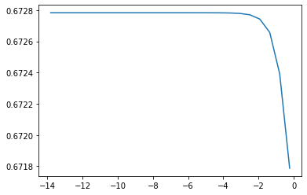
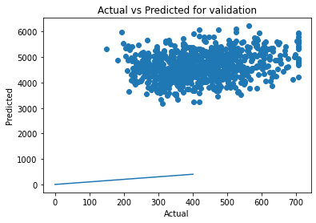
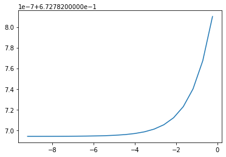
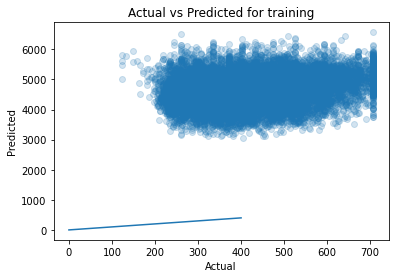
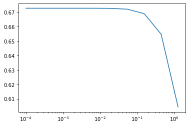
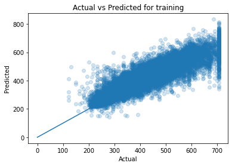
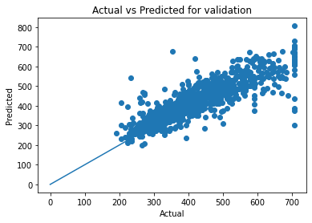

import pandas as pd
import numpy as np
import seaborn as sns
import matplotlib.pyplot as plt
import math
%matplotlib inline
from sklearn.preprocessing import StandardScaler
from sklearn.feature_selection import mutual_info_regression
from sklearn.linear_model import Lasso, Ridge, ElasticNet ,LassoCV
from sklearn.model_selection import KFold , RepeatedKFold
from sklearn.model_selection import GridSearchCV
from sklearn.model_selection import train_test_split
from sklearn.linear_model import LinearRegression, Ridge
from sklearn.preprocessing import StandardScaler, PolynomialFeatures
from sklearn.metrics import mean_squared_errorPrerequisites
upload clean saved data
cali = pd.read_pickle("../data/main_data.pkl")
cali| longitude | latitude | housing_median_age | total_rooms | total_bedrooms | population | households | median_income | median_house_value | ocean_proximity_INLAND | ocean_proximity_OTHER | |
|---|---|---|---|---|---|---|---|---|---|---|---|
| 2 | -122.24 | 37.85 | 52.0 | 38.301436 | 13.784049 | 22.271057 | 13.304135 | 7.2574 | 593.380148 | 0 | 1 |
| 3 | -122.25 | 37.85 | 52.0 | 35.693137 | 15.329710 | 23.622024 | 14.798649 | 5.6431 | 584.208867 | 0 | 1 |
| 4 | -122.25 | 37.85 | 52.0 | 40.336088 | 16.733201 | 23.769729 | 16.093477 | 3.8462 | 584.978632 | 0 | 1 |
| 5 | -122.25 | 37.85 | 52.0 | 30.315013 | 14.594520 | 20.322401 | 13.892444 | 4.0368 | 519.326487 | 0 | 1 |
| 6 | -122.25 | 37.84 | 52.0 | 50.348784 | 22.113344 | 33.075671 | 22.671568 | 3.6591 | 546.991773 | 0 | 1 |
| ... | ... | ... | ... | ... | ... | ... | ... | ... | ... | ... | ... |
| 20635 | -121.09 | 39.48 | 25.0 | 40.804412 | 19.339080 | 29.068884 | 18.165902 | 1.5603 | 279.463772 | 1 | 0 |
| 20636 | -121.21 | 39.49 | 18.0 | 26.400758 | 12.247449 | 18.867962 | 10.677078 | 2.5568 | 277.668868 | 1 | 0 |
| 20637 | -121.22 | 39.43 | 17.0 | 47.476310 | 22.022716 | 31.733263 | 20.808652 | 1.7000 | 303.809151 | 1 | 0 |
| 20638 | -121.32 | 39.43 | 18.0 | 43.127717 | 20.223748 | 27.221315 | 18.681542 | 1.8672 | 291.032644 | 1 | 0 |
| 20639 | -121.24 | 39.37 | 16.0 | 52.773099 | 24.819347 | 37.242449 | 23.021729 | 2.3886 | 298.998328 | 1 | 0 |
17994 rows × 11 columns
Data splitting
- Split the data into training , validation and testing
- split data to 90 ,5,5
X = cali.drop('median_house_value',axis=1)
X| longitude | latitude | housing_median_age | total_rooms | total_bedrooms | population | households | median_income | ocean_proximity_INLAND | ocean_proximity_OTHER | |
|---|---|---|---|---|---|---|---|---|---|---|
| 2 | -122.24 | 37.85 | 52.0 | 38.301436 | 13.784049 | 22.271057 | 13.304135 | 7.2574 | 0 | 1 |
| 3 | -122.25 | 37.85 | 52.0 | 35.693137 | 15.329710 | 23.622024 | 14.798649 | 5.6431 | 0 | 1 |
| 4 | -122.25 | 37.85 | 52.0 | 40.336088 | 16.733201 | 23.769729 | 16.093477 | 3.8462 | 0 | 1 |
| 5 | -122.25 | 37.85 | 52.0 | 30.315013 | 14.594520 | 20.322401 | 13.892444 | 4.0368 | 0 | 1 |
| 6 | -122.25 | 37.84 | 52.0 | 50.348784 | 22.113344 | 33.075671 | 22.671568 | 3.6591 | 0 | 1 |
| ... | ... | ... | ... | ... | ... | ... | ... | ... | ... | ... |
| 20635 | -121.09 | 39.48 | 25.0 | 40.804412 | 19.339080 | 29.068884 | 18.165902 | 1.5603 | 1 | 0 |
| 20636 | -121.21 | 39.49 | 18.0 | 26.400758 | 12.247449 | 18.867962 | 10.677078 | 2.5568 | 1 | 0 |
| 20637 | -121.22 | 39.43 | 17.0 | 47.476310 | 22.022716 | 31.733263 | 20.808652 | 1.7000 | 1 | 0 |
| 20638 | -121.32 | 39.43 | 18.0 | 43.127717 | 20.223748 | 27.221315 | 18.681542 | 1.8672 | 1 | 0 |
| 20639 | -121.24 | 39.37 | 16.0 | 52.773099 | 24.819347 | 37.242449 | 23.021729 | 2.3886 | 1 | 0 |
17994 rows × 10 columns
y = cali.median_house_value
y.head()2 593.380148
3 584.208867
4 584.978632
5 519.326487
6 546.991773
Name: median_house_value, dtype: float64X, X_test, y, y_test = train_test_split(X, y, test_size=.05, random_state=10)
X_train, X_val , y_train , y_val = train_test_split(X,y, test_size=.047,random_state = 3)Model Training
In this section we’re going to test models, Lasso , ridge ,elastcnet and Polynomial Regression with LassoCV. We’ll train, tune, calculate the accuracy and finally compare the predictors
Lasso
- Lasso regression is a regularization technique. It is used over regression methods for a more accurate prediction. This model uses shrinkage.
- The word “LASSO” stands for Least Absolute Shrinkage and Selection Operator
- Lasso Regression uses L1 regularization technique
kfold = RepeatedKFold(n_splits=10, n_repeats=3,random_state=1)
print("Lasso Model:")
params = {
"alpha": np.logspace(-6, -.1, 25)
}
grid_est = GridSearchCV(Lasso(), param_grid=params, cv=kfold,
return_train_score=False)
grid_est.fit(X_train, y_train)
df = pd.DataFrame(grid_est.cv_results_)
df["alpha"] = df.params.apply(lambda val: val["alpha"])
plt.plot(np.log(df.alpha), df.mean_test_score);Lasso Model:
using grid search to find best alpha
grid_est.best_estimator_Lasso(alpha=0.0005060188166432624)In a Jupyter environment, please rerun this cell to show the HTML representation or trust the notebook.
On GitHub, the HTML representation is unable to render, please try loading this page with nbviewer.org.
Lasso(alpha=0.0005060188166432624)
scaler = StandardScaler()
X_train_scaled = scaler.fit_transform(X_train.values)
X_val_scaled = scaler.transform(X_val.values)
X_test_scaled = scaler.transform(X_test.values)
lm_lasso = Lasso(alpha=0.0005060188166432624)R^2 accuracy
lm_lasso.fit(X_train_scaled, y_train)
print(f'Lasso Regression train R^2: {lm_lasso.score(X_train_scaled, y_train):.3f}')
print(f'Lasso Regression val R^2: {lm_lasso.score(X_val_scaled, y_val):.3f}')Lasso Regression train R^2: 0.674
Lasso Regression val R^2: 0.688MSE
y_pred = lm_lasso.predict(X_val_scaled)
mse = mean_squared_error(y_val, y_pred)
mse4242.709786560889RMSE
math.sqrt(mse)65.13608666907223# These are the (standardized) coefficients found when it refit using that best alpha
list(zip(X_train.columns, lm_lasso.coef_))[('longitude', -63.49992468463468),
('latitude', -67.4533061973147),
('housing_median_age', 12.237601416666),
('total_rooms', -35.106061252466915),
('total_bedrooms', 67.32711383614625),
('population', -55.93664664756462),
('households', 24.80983673490453),
('median_income', 75.92336002345408),
('ocean_proximity_INLAND', -20.810763183382893),
('ocean_proximity_OTHER', -3.7316738401739906)]Plot actual vs predicted
# Fitted vs. Actual
y_train_pred = lm_lasso.predict(X_train)
plt.scatter(y_train, y_train_pred, alpha=0.2)
plt.plot([0, 400], [0, 400])
plt.title('Actual vs Predicted for training')
plt.xlabel('Actual')
plt.ylabel('Predicted')/opt/conda/lib/python3.9/site-packages/sklearn/base.py:443: UserWarning: X has feature names, but Lasso was fitted without feature names
warnings.warn(Text(0, 0.5, 'Predicted')y_vall_pred = lm_lasso.predict(X_val)
plt.scatter(y_val, y_vall_pred)
plt.plot([0, 400], [0, 400])
plt.title('Actual vs Predicted for validation')
plt.xlabel('Actual')
plt.ylabel('Predicted')/opt/conda/lib/python3.9/site-packages/sklearn/base.py:443: UserWarning: X has feature names, but Lasso was fitted without feature names
warnings.warn(Text(0, 0.5, 'Predicted')
Ridge
- Ridge regression is a model tuning method that is used to analyse any data that suffers from multicollinearity
- ridge regression puts a similar constraint on the coefficients by introducing a penalty factor. However, while lasso regression takes the magnitude of the coefficients, ridge regression takes the square.
- Ridge Regression is L2 regularization technique
print("Ridge Model:")
params = {
"alpha": np.logspace(-4, -.1, 20)
}
grid_est = GridSearchCV(Ridge(), param_grid=params, cv=kfold,
return_train_score=False)
grid_est.fit(X_train, y_train)
df = pd.DataFrame(grid_est.cv_results_)
df["alpha"] = df.params.apply(lambda val: val["alpha"])
plt.plot(np.log(df.alpha), df.mean_test_score);Ridge Model:
using grid search to find best alpha
grid_est.best_estimator_Ridge(alpha=0.7943282347242815)In a Jupyter environment, please rerun this cell to show the HTML representation or trust the notebook.
On GitHub, the HTML representation is unable to render, please try loading this page with nbviewer.org.
Ridge(alpha=0.7943282347242815)
scaler = StandardScaler()
X_train_scaled = scaler.fit_transform(X_train.values)
X_val_scaled = scaler.transform(X_val.values)
X_test_scaled = scaler.transform(X_test.values)
lm_rig = Ridge(alpha=0.7943282347242815)R^2 accuracy
lm_rig.fit(X_train_scaled, y_train)
print(f'Ridge Regression train R^2: {lm_rig.score(X_train_scaled, y_train):.3f}')
print(f'Ridge Regression val R^2: {lm_rig.score(X_val_scaled, y_val):.3f}')Ridge Regression train R^2: 0.674
Ridge Regression val R^2: 0.688MSE
y_pred = lm_rig.predict(X_val_scaled)
mse = mean_squared_error(y_val, y_pred)
mse4242.648044288968RMSE
math.sqrt(mse)65.13561271907226# These are the (standardized) coefficients found when it refit using that best alpha
list(zip(X_train.columns, lm_rig.coef_))[('longitude', -63.40591384682011),
('latitude', -67.3551891862575),
('housing_median_age', 12.237912279085482),
('total_rooms', -35.056355680420104),
('total_bedrooms', 67.23046447896748),
('population', -55.928171661406516),
('households', 24.85182415465451),
('median_income', 75.9057110091124),
('ocean_proximity_INLAND', -20.841803748946013),
('ocean_proximity_OTHER', -3.7255118079204714)]Plot actual vs predicted
# Fitted vs. Actual
y_train_pred = lm_rig.predict(X_train)
plt.scatter(y_train, y_train_pred, alpha=0.2)
plt.plot([0, 400], [0, 400])
plt.title('Actual vs Predicted for training')
plt.xlabel('Actual')
plt.ylabel('Predicted')/opt/conda/lib/python3.9/site-packages/sklearn/base.py:443: UserWarning: X has feature names, but Ridge was fitted without feature names
warnings.warn(Text(0, 0.5, 'Predicted')
y_vall_pred = lm_rig.predict(X_val)
plt.scatter(y_val, y_vall_pred)
plt.plot([0, 400], [0, 400])
plt.title('Actual vs Predicted for validation')
plt.xlabel('Actual')
plt.ylabel('Predicted')/opt/conda/lib/python3.9/site-packages/sklearn/base.py:443: UserWarning: X has feature names, but Ridge was fitted without feature names
warnings.warn(Text(0, 0.5, 'Predicted')Elastic net
- hybrid approach, elastic net, which introduces a new parameter alpha that balances a tradeoff between L1 and L2 penalties
def build_grid_search_est(model, X, y, cv=5, **params):
grid_est = GridSearchCV(model, param_grid=params, cv=kfold,
return_train_score=False)
grid_est.fit(X, y)
df = pd.DataFrame(grid_est.cv_results_)
for param in params:
df[param] = df.params.apply(lambda val: val[param])
plt.semilogx(df.alpha, df.mean_test_score)
return grid_est
print("Elastic Net Grid Search")
elastic_net_grid_est = build_grid_search_est(ElasticNet(), X_train, y_train, cv=kfold,
alpha=np.logspace(-4, 0.1, 10));Elastic Net Grid Search
elastic_net_grid_est.best_estimator_ElasticNet(alpha=0.0023263050671536237)In a Jupyter environment, please rerun this cell to show the HTML representation or trust the notebook.
On GitHub, the HTML representation is unable to render, please try loading this page with nbviewer.org.
ElasticNet(alpha=0.0023263050671536237)
scaler = StandardScaler()
X_train_scaled = scaler.fit_transform(X_train.values)
X_val_scaled = scaler.transform(X_val.values)
X_test_scaled = scaler.transform(X_test.values)
lm_elas = ElasticNet(alpha=0.0023263050671536237)lm_elas.fit(X_train_scaled, y_train)
print(f'ElasticNet Regression train R^2: {lm_elas.score(X_train_scaled, y_train):.3f}')
print(f'ElasticNet Regression val R^2: {lm_elas.score(X_val_scaled, y_val):.3f}')ElasticNet Regression train R^2: 0.674
ElasticNet Regression val R^2: 0.688Polynomial Regression
- Polynomial features are those features created by raising existing features to an exponent.
- polynomial features are a type of feature engineering, e.g. the creation of new input features based on the existing features.
poly = PolynomialFeatures(degree=3)
X_train_poly = poly.fit_transform(X_train)
# Apply polynomial transformation to val set
X_val_poly = poly.transform(X_val)
# Fit a model using polynomial features
lr_poly = LinearRegression()
lr_poly.fit(X_train_poly,y_train)LinearRegression()In a Jupyter environment, please rerun this cell to show the HTML representation or trust the notebook.
On GitHub, the HTML representation is unable to render, please try loading this page with nbviewer.org.
LinearRegression()
print(f'Polynomial Regression train R^2: {lr_poly.score(X_train_poly,y_train):.3f}')
print(f'Polynomial Regression val R^2: {lr_poly.score(X_val_poly, y_val):.3f}')Polynomial Regression train R^2: 0.770
Polynomial Regression val R^2: 0.762poly = PolynomialFeatures(degree=3)
X_poly = poly.fit_transform(X)
X_test_poly = poly.transform(X_test)
lr1_poly = LinearRegression()
lr1_poly.fit(X_poly,y)
print(f'Polynomial Regression train R^2: {lr1_poly.score(X_poly,y):.3f}')
print(f'Polynomial Regression test R^2: {lr1_poly.score(X_test_poly, y_test):.3f}')Polynomial Regression train R^2: 0.770
Polynomial Regression test R^2: 0.723MSE
y_pred = lr1_poly.predict(X_test_poly)
mse = mean_squared_error(y_test, y_pred)
mse3756.0092352208662RMSE
math.sqrt(mse)61.28628912914263Plot actual vs predicted
y_train_pred = lr1_poly.predict(X_poly)
plt.scatter(y, y_train_pred, alpha=0.2)
plt.plot([0, 400], [0, 400])
plt.title('Actual vs Predicted for training')
plt.xlabel('Actual')
plt.ylabel('Predicted')Text(0, 0.5, 'Predicted')
y_vall_pred = lr1_poly.predict(X_test_poly)
plt.scatter(y_test, y_vall_pred)
plt.plot([0, 400], [0, 400])
plt.title('Actual vs Predicted for validation')
plt.xlabel('Actual')
plt.ylabel('Predicted')Text(0, 0.5, 'Predicted')
Conclusion
- regularization models all have the same accuracy
- Polynomial regression performed butter and its the one we choose to test
- it seems there is underfitting in Polynomial regression accuracy
- for more feature work we want to improve our accuracy:
- adding more data.
- feature ingineering.
- train on other models.